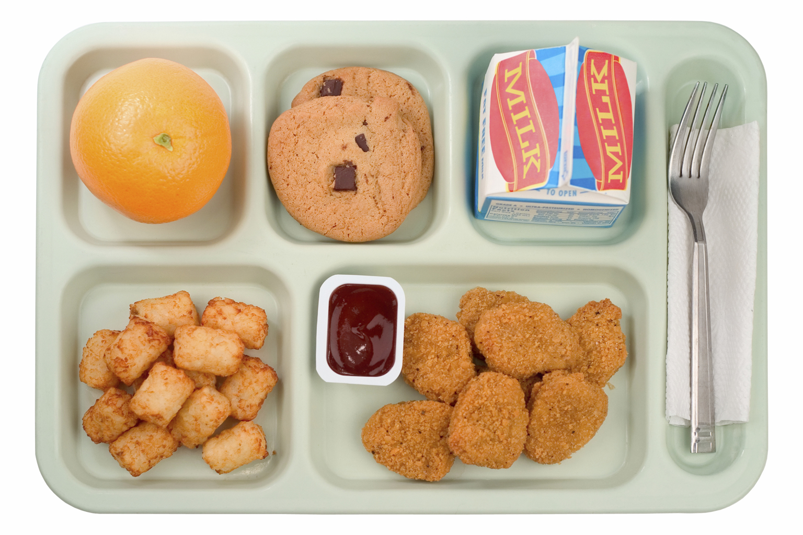

Las circunstancias es que: los alumnos consumen mucha cantidad de comida chatarra por ejemplo que comen hamburguesas, pizza o comida que los hacen al tiempo obesos.
Los ninios pasan la mitad o casi todo el dia en la escuela por eso tienen que alimentarse bien mantener su salud en un buen estado estar protegido ante toda enfermedad, las escuelas tiene la obligacion de cuidar de su salud.
En algunos casos los chicos deben salir a comer afuera porque la comida de la escuela no es lo sufientemente buena para que ellos se convensan de quedarse a comer aca.